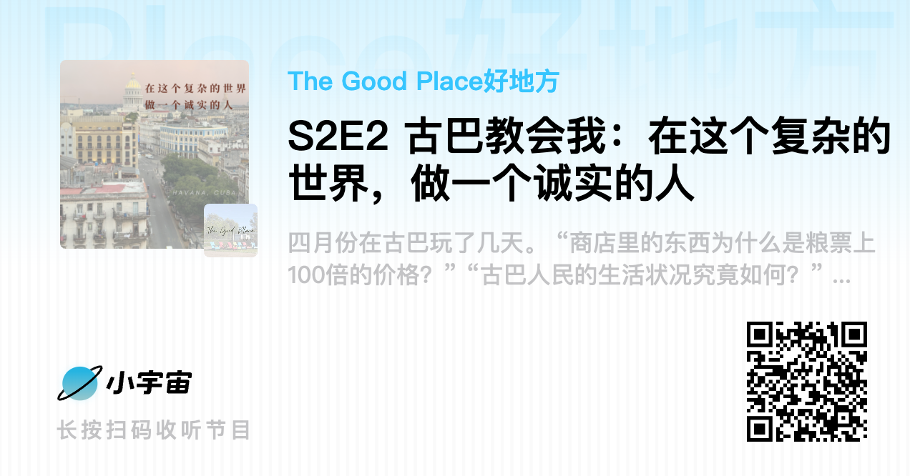
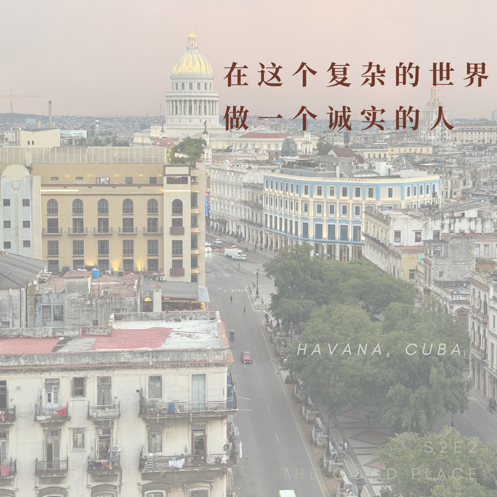
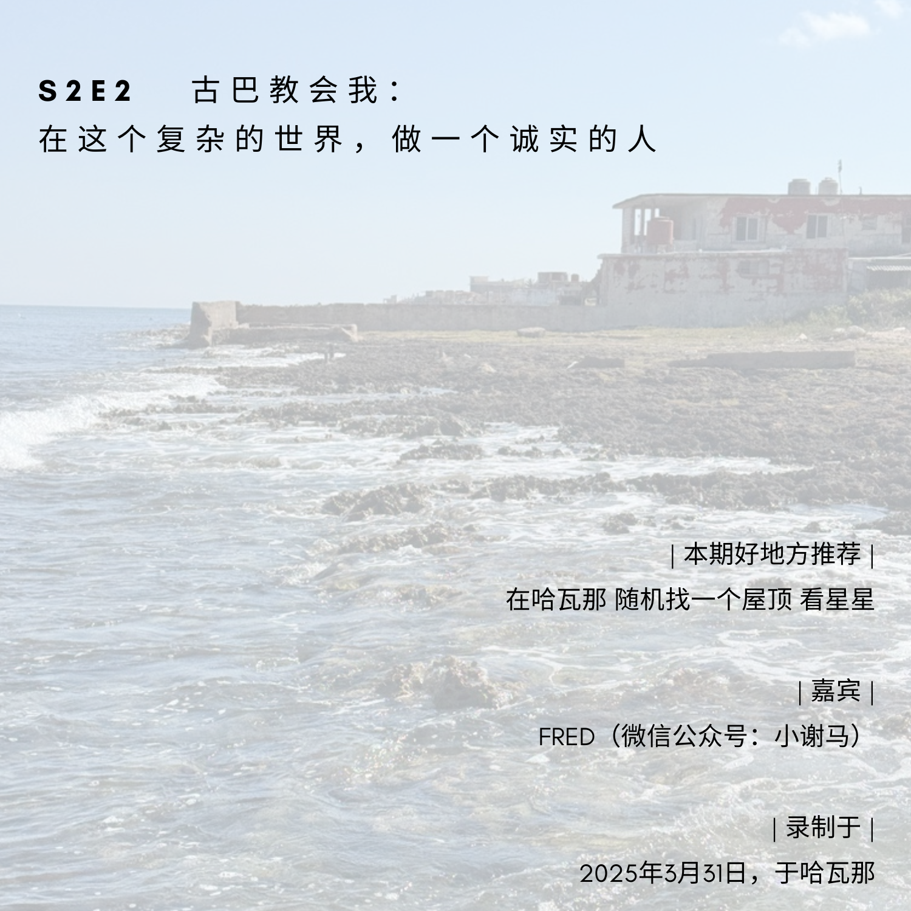

可以点击这里收听



文字速览（GPT版、删减版）
Lumi：
听众朋友们大家好，我是 Lumi，是播客「The Good Place好地方」的主播。我现在人在古巴哈瓦那。
可能大家第一反应是——你跑去那儿干嘛？
今天是我在古巴的第四天，明天就要离开了。这几天在哈瓦那老城乱逛、参加各种 tour，和当地人聊天的时候，我对古巴生出一种非常复杂的感觉。我问了很多问题，也听到了很多版本的答案。到现在我都还没有完全弄明白，比如这里政治经济的运作方式等等，一切都很神奇，我也很希望尽量多了解一点。
古巴经常停电、停水，不过我比较幸运，这几天没有遇到特别影响生活的情况。但网速真的非常非常慢，慢到有时候连一条文字都发不出去，图片更别说了。
昨天晚上运气很好，我在信号偶尔恢复的时候刷了会儿小红书，刚好刷到一位现在就坐在我对面的网友。他发了一个帖子，说如果有任何人在古巴需要帮助，可以联系他。我点进他的主页看了一下，决定问问他有没有空一起录一期播客。他目前已经在古巴待了 9 个月，对当地的生活和各种情况都比较了解，而我刚好有一堆问题想问。
现在是 3 月 31 号的下午，我们坐在古巴哈瓦那的一家民宿里吹着空调，我把他邀请到了我对面。我们也是第一次见面，所以我也非常期待今天这一期。话不多说，先请你自我介绍一下吧。
Fred：
我叫 Fred，在山东读书，因为一些机会来到古巴做访学，目前已经待了 9个月。谈不上对古巴有多了解，只是希望能分享一些自己在这里的见闻。
Lumi：
好，谢谢你。我也简单介绍一下我自己，因为我们真的是第一次见面。
我是 Lumi，00 年的，之前在香港读书和工作。现在算是辞职出来，在世界各地走一走。这半个月我都在拉美，古巴是我这次拉美行的最后一站，明天就要飞去美国了。
对我来说，古巴是这一路上最特别的一站。前面在秘鲁、智利，主要是看风景；而古巴更多是历史、人文，也和中国社会某些历史阶段有一点相似，所以我特别好奇，想多了解一点。
不如我们就从我最近这几天在古巴的经历聊起。刚刚我有跟 Fred 提到，我前两天参加了一个「社会学家 walking tour」，号称要带大家看到「真实的古巴」。
我们去了国营商店，看粮票粮本；也去了私营店铺，对比价格；那位社会学家一路跟我们解释古巴人的现实生活，也尝试用这些信息来说明这个国家的经济体制是怎么运作的。
但是刚刚 Fred 跟我说——这很可能是一种「骗术」。
Fred：
是。在古巴，当大家用非母语跟游客交流的时候，通常都会「包装」一下。因为这里实在太贫穷了，对人性的那层「包装」会特别厚。
我怀疑你遇到的这位，很大概率是出于利益考虑，把自己包装成「做学术的老师」。我之前接触过不少游客，他们也给我反馈过类似的 tour。那些人说的内容，多多少少都是「讲给游客听的话」，不见得是当地真正的现实。
Lumi：
我这几天有好多好奇的问题。
第一个问题：古巴的教育真的「免费」吗？
Fred：
是的，当地人读大学是不用交学费的。但基本不提供宿舍。
我有很多古巴朋友，在选大学的时候，不是看哪所大学更好，而是看哪所离家更近，因为这样可以省下很多开销。
Lumi：
可以理解。给大家一个直观的概念：我听说古巴这边的平均工资大概是 13～15美金一个月，大约是四五千比索。如果我说错你随时纠正——我不会从这个开始又被骗吧？（笑）
Fred：
其实这个数字只是一个大概的「平均」。实际差异非常大。
古巴东部基本没什么游客，那里的人收入完全靠自己本地的那点儿钱，真的会非常低。我之前去过中部的一个省份，问一个在国营博物馆工作的员工，一个月收入多少？他说 3500 比索左右，相当于人民币 70 块钱，差不多 10 美金，跟你说的差不多。
但在哈瓦那，尤其是你住的老城这一片，出租车司机、酒店服务员这些，收入会很高，有时候甚至能接近国内的水平。
Lumi：
我这两天观察下来有一个猜测：这个国家好像在同时运转两套体系。
一套是国营系统：比如定期分配粮食、国营单位发工资——像博物馆的员工，工资就是几千比索，一个月十几美金左右。
但与此同时，几乎所有人都在「赚外快」。那位社会学家跟我说，他带一个 walking tour，每个人收费 20 美金；出租车从机场进城可能 30 美金；老爷车在城里转一小时也是二三十美金。感觉大家两条腿走路。
疫情之后，国营体系分配的粮食很少，而且经常断供，所以大家只好去商店买东西：一瓶水可能要一两百甚至两三百比索，一盘鸡蛋两千多比索。那这些价格，只能靠美金收入来支撑他们的这部分生活。这是我这几天的直观感受。
Fred：
你的感受是对的。
早期卡斯特罗革命成功之后，古巴从美国主导的资本主义体系，转向社会主义，实行公有制。当时全社会靠「粮本」来分配米面油、鸡蛋，有小孩的家庭还能领奶粉。
那时候还有苏联的援助，整个社会主义阵营搞了一个叫「经互会」的经济联盟：
- 苏联提供武器和石油，
- 中国提供粮食，
- 古巴提供糖。
古巴非常适合种甘蔗和烟草，苏联帮他们建糖厂，古巴出产的糖卖给苏联和中国，中国再把粮食运过来，苏联运石油。那时候古巴的情况其实非常好，凭粮本就能比较充裕地拿到物资。
但后来社会主义阵营危机、苏联解体，古巴一下子就被孤立了。
在这样物资匮乏、电力紧张的情况下，古巴政府也没办法，只好放松一点政策，大概十几年前开始扶植一些私人企业，让民营经济发挥作用——有点像中国某个阶段强调「让一部分人先富起来」那样。政府希望借民间力量，从外面把粮食、油这些物资弄进来。
但一开始，大部分小贩和「民营企业家」做的都是倒买倒卖：把国家的东西批下来，囤起来，再高价卖出去。
所以现在整个国家就处在一个很摇摆的状态。一方面美国长期制裁，货很难进来；另一方面政府希望民间「发挥主观能动性」，但普通人又不太有这个能力。
慢慢地，某种意义上的「好消息」来了：很多古巴人偷渡去了美国迈阿密。现在古巴很大一部分外汇都是侨汇，那些偷渡过去的人给家里汇钱——在迈阿密挣的美金，通过各种渠道流回古巴。
政府把这部分钱叫做「自由货币」，简称 MLC。
它的运作方式是：
- 侨汇汇到国家账户，
- 再以数字形式发到家属的 MLC 账户上，
- 家属拿着这笔「电子钱」，只能在国营的「美元店」里买东西，不能在私营店用。
Lumi：
有点像一个只能在特定商店消费的电子钱包？
Fred：
对。
而且这个钱的官方汇率只有黑市的一半左右。比如现在黑市上 1 美金可以兑 350 比索，在国家系统里可能只能兑 130 左右。差价就被国家用来「补外汇」——拿这部分外汇去买石油、买粮食，维持基本运转。
在古巴，电费本身其实很便宜，这和卡斯特罗、切·格瓦拉当年的承诺有很大关系：
革命之后，他们说「政府是真的要为人民服务」，具体到民生，就是——
- 要让所有人都用得起电，
- 要让家家户户都通煤气和自来水。
你住的民宿那种「灶台 + 烤箱」的组合灶，在古巴家家户户几乎都是标配，这是政府统一配的。煤气价格很低，只是经常断供。汽油价格也很低，大概人民币三块钱一升，但同样是供应不足。
所以现在就是你说的「两条腿」：
- 一条是国家兜底，保证大家有饭吃、有电有水，
- 另一条是私营和侨汇体系，支撑「多出来的那一部分生活」。
Lumi：
我这两天也在想一个问题：古巴人到底「苦」不苦？
出发前，大家都说来古巴可以带一些旧衣服、卫生用品之类的送给当地人，大家的前提是——古巴人很苦。但我来到这里，看到的好像不是那种「愁云惨雾」的场景，街上还有很多人载歌载舞。
当然，也有可能正是因为物质条件有限，他们才更需要以这种方式生活。但我就很好奇：
我们该怎么定义「苦」？他们的生活客观上到底是一种怎样的状态？
比如说，街上的一些老人、残疾人，确实是挺苦相的。但很多年轻人的精神状态看起来还不错。
昨天我坐船去了卡萨布兰卡，后来在居民区随便乱走，走累了，看见一个院子里有人在乘凉，我就问能不能坐一会儿休息。那家人正在洗衣服，一个男的坐在那里，我们就简单聊了几句。他英语不好，只跟我说了一句：「Cuba, no money.」
那一刻我有点分不清，他是真的想哭，还是只是找不到词。
这些细碎的场景加在一起，让我特别迷惑，所以也想听听你怎么理解。
Fred：
哈瓦那很大。行政上叫「哈瓦那省」，范围非常广。但游客在这里真正活动的范围，可能只有方圆三公里。
所以你在这三公里里看到的「古巴」，其实都是被精心布置好的一个舞台。游客下飞机之后，就直接走上了这个舞台，和舞台上的各种角色交往——弹吉他的、开老爷车的、卖雪茄的、「社会学家」导游……这些其实都是「演员」。
真正的古巴人，是坐在这个舞台下面看戏的观众。
更有意思的是：观众怎么看台上的人？
以及——我们以为是「在看古巴」的游客，其实恰恰是被他们凝视的那一群。
我在古巴住了半年以后，才慢慢体会到这一点。刚来的时候，大家都很热情，会在街上冲我喊「China！」很开心地跟我打招呼。那时候我也会觉得古巴人对中国人很友好。
但接触多了、听了更多故事以后，我慢慢发现：很多我们看到的「温暖」「平等」「充满爱」的叙事，其实是一个「包装过的形象」。它背后往往是非常残酷的现实，残酷到我都很难消化。
我们很容易把苦难包装成励志故事：
比如一个年轻人，在困境里坚持创作、画画、做音乐，把自己打扮得很浪漫。游客特别愿意听这种故事，于是就会买他的画、给他小费，觉得「我帮到了一个有梦想的艺术家」。
但铁骨现实是：
在苦难和市场经济的缝隙里，每个人都在做一个选择——
我要说真话，还是讲一个对方更愿意买单的故事？
大部分和游客接触的古巴人，其实都在演戏。游客沉浸在戏里，回去以后很开心地说：
「我真的看到了真实的古巴。」
但绝大部分人都没有勇气走出这三公里。
只要你往城外坐半小时车，再去看看街上那些忙着生活的古巴人，就会发现：没有人在路边给你唱歌要钱，也没人围着你讲故事，那才是他们真正的日常。
Lumi：
我昨天去的卡萨布兰卡，应该也算是走出了「老城三公里」。今天早上去潜水，又往西开车，比海明威码头还要再远一点，那里基本就见不到游客了。
昨天在卡萨布兰卡，很多古巴人就坐在阳台或者院子里乘凉。屋子里黑乎乎的，我要凑很近偷看，才发现他们大多在看电视，那种很老的电视机。
我一边走一边想：
他们平时靠什么谋生？在想什么？
但我也不知道。
Fred：
我有时候会去邻居家看电视，那种体验会让我想起我小时候——也是一整天对着电视等动画片，一集播完下一集。那时候我一点也不觉得无聊。
但在古巴，当我看到那些老人从早上起来就坐着看电视，一直看到深夜，我会觉得：
无论是古巴人还是外国人在这里生活，如果待得足够久，最大的敌人叫「无聊」。
对外国人来说，这种无聊来自：
- 语言不通，你进不了古巴人的生活；
- 说母语的圈子又鱼龙混杂，有游客、有偷渡客，有做各种灰色生意的；
- 很多中国人之间也互相不太信任，在海外见到同胞未必会主动打招呼。
所以大部分外国人在古巴旅居，其实都是被迫跟自己相处，直面自己。
对古巴人来说，无聊更多是因为「没钱」。
很多消费活动门槛很高，根本进不去。
老年人的退休金又极低——我听说很多老人一个月才一千多比索，连一袋奶粉都买不起。生病了就去医院：有药就治，没药就挺着。
我有个中国朋友，他房东就是这样去世的。老太太七十多岁，还在帮他们洗衣服赚点零用钱，有一天突然就再也没来。问发生了什么，只得到一句「走了」。什么病没人说清楚。她以前还是国家运动员，是打篮球的国手。
所以大部分老人的生活就是：
- 坐在家里看一整天电视；
- 或者去街边卖塑料袋，一只袋子 10 比索，赚点小钱给孙子买块糖。
他们的基础口粮靠粮本是能吃饱的，但要多买一点好吃的，就得自己想办法赚钱。
Lumi：
粮本上的东西真的能吃饱吗？
在那个社会学家带的 tour里，我听说粮本上的东西也是要付一点钱的，大概一两比索，但很便宜。
Fred：
对，很便宜。凭粮本买东西的价格可以低到不可思议。
我家附近有一家很大的国营面包店，每天早上六点多就有一长串队伍，大家拿着粮本排队，工作人员在本子上划一下，你就能领走那天的配给面包。药品有时候也是凭本可以领的。
我去过的国家不多，但就我对中国和古巴的对比，我会觉得：在某些民生措施上，古巴的「社会主义因素」甚至比中国更重。他很多事情做不到位，是因为确实没钱没资源，但就「态度」而言，他已经做到很极致了——
我要尽量保证你有电用、有煤气、有饭吃。
当然，哈瓦那以外很多地区每天要停电 8～13 小时，这也是现实。
Lumi：
我这两天也在观察「古巴人苦不苦」这个问题。来之前，很多攻略都在强调「这里的人很苦」。大家会说，你有什么旧衣服、物资、卫生用品都可以带来送人。
但我看见的古巴人，很多都没有我想象中那种愁苦的样子。街上经常有人载歌载舞。
你觉得，这个「古巴人民很苦」的说法，到底该怎么理解？是一种表演吗？还是他们真的很苦，只是表现得乐观一点？
Fred：
我觉得「他们很苦」这件事不需要表演，现实已经够苦了，不用再演。
真正需要表演的，反而是「爱国」和某些很宏大的东西。
从哲学上说，我觉得人的人生里有三种基本叙事：
- 家庭叙事：我爱我的父母、配偶、孩子。
- 市民社会叙事：我能在市场里赚钱，买到我喜欢的东西。
- 政治叙事：我如何看待我的国家、民族和意识形态。
在古巴人身上，我看到的是：
- 在家庭层面，他们对家人的爱，甚至比很多中国家庭还要极致；
- 在市民社会层面，他们很难在市场里实现自我，因为就业机会太少；
- 在政治层面，很多人对「政府」并没有太多认同感，但这种情绪未必会公开表达。
我有个德国朋友，在意大利当教授，他来古巴调研时发现：这边单亲妈妈特别多。
很多男人跟女人「凑在一起」一段时间，女人怀孕了，男人就走了。这里有个词叫 pareja，更像「姘头」「对象」这种概念，不太强调婚姻仪式。大部分人连结婚证都不会去领，就是住在一起，有了孩子就算。
为什么会这样？
那个德国教授给了一个让我印象很深的解释：
在古巴，女性靠自己的力量，也能把孩子拉扯大——虽然吃不饱、物质艰辛，但孩子至少饿不死，有饭吃，有基础医疗。
所以女性对男性的期待就变得很低：
你养不养随你，反正这是我的孩子。
家庭里的长辈知道女儿单亲怀孕了，第一反应往往是开心，而不是忧虑。他们会觉得「有了下一代，是一件好事」。
从这个意义上说，这里的很多女性是「独立」的，只不过这种独立不是靠稳定工作和同工同酬，而是靠国家那条「最低保障线」——我一个人也能把孩子养活。
Lumi：
那避孕呢？避孕套算不算是国家发放的东西？
Fred：
我不是特别了解具体政策，但路边确实有卖避孕套的，价格不贵，大概 50 比索一个，折合人民币一块钱左右。
我怀疑很多是欧洲国家捐助来的物资，这些东西在他们眼里也算是一种「政治正确」。
Lumi：
听你这么说，古巴女性好像一方面很重视成为母亲，觉得当妈妈是一件伟大的事；另一方面，又在某种意义上实现了「不依赖男性」的生活。
Fred：
是。
我接触到的很多古巴女性，是真的很喜欢小孩，认为当妈妈是一件非常光荣的事情。
家庭内部最大、最深的情感矛盾通常是夫妻之间的矛盾，但代际之间的亲情，是非常非常深的——那种深度，可能比很多中国家庭都更强。
我以前也以为「穷国的人没什么教养」，这是我自己一开始的偏见。
但真正接触以后，我发现他们在家庭里的真挚感情，是会让人震撼的。
Lumi：
我也有类似的观感。
我这次来拉美之前，先去了智利和秘鲁。智利几乎没人讲英语，那几天我特别难受，因为跟谁都聊不了天。
一落地古巴来接我的司机，是个七十多岁的老头，英语非常好。
我一路上问了他很多问题，他就跟我说：「我们有免费的教育，我们是受教育的，我们为此感到自豪。」
但你刚刚又说，很多小朋友其实不会英语，甚至哈瓦那大学的学生，能流利说英语的也不多，很多学校没有英语老师。这种落差我也很好奇。
Fred：
是的。
他说的那种「教育好」，更多是一种「国家提供免费基础教育」的自豪感，而不是「人人都会外语」。
从另一个角度看，我们在中国受的教育，某种意义上就是为了「就业」：
资本主义的机器建好了，教育就变成其中一环，不断为社会输送劳动力。
但古巴这里的问题是——没有就业。
你说的那种「毕业后要为政府服务几年」，确实存在，但只限于一些比较好的大学、成绩比较优秀的学生。他们会被分配到博物馆、文化机构，这些岗位是「为国家服务」，不收小费、不拿游客的钱。
至于很多普通大学毕业生，尤其是女孩，很遗憾，据我了解相当一部分会去做性工作；男孩里也有很多做男同性服务的。
在哈瓦那，同性恋群体比例非常高。有一次我问一个古巴人为什么，他的回答让我很震撼：
我本来以为他会说「我们很平等、不歧视」，结果他说：
因为有很多欧美人来古巴，他们很喜欢男孩。
于是很多男孩为了赚钱，就选择把自己「包装成」同性恋，在街上晃，去找客人。
久而久之，你在街上看到的那些「身份、性取向、故事」，有多少是真的，有多少是为了生计而表演出来的，其实很难分辨。
Lumi：
昨天我在海明威的那家酒吧（Floridita）旁边，遇到一个自称来自纽约的老白男。他说自己在纽约的女朋友是中国人，旁边还坐着一个古巴女孩，自称是他的「朋友」，英语几乎不会。我当时就隐约觉得，他们之间可能也是某种「包养关系」。
Fred：
很常见。
古巴在某种意义上已经成了北美的「后花园」。
很多加拿大、美国的老年男人，七十多岁退休，拿着养老金来古巴常住，一个月三四百美金，就可以包养一个十八岁左右的女孩——这个画面在这里一点都不稀奇。
Lumi：
你刚刚提到那位古巴女孩不收你钱，说自己是在为政府工作，这让我想到一个细节。
昨天我在卡萨布兰卡玩完准备回程的时候，刚好有一辆巴士路过。我问司机是不是往老城方向，他解释了一圈大概路线，我就问能不能上车，他点点头我就上了。
车费是两比索，但我最小的纸币只有 10 比索。我在掏钱的时候，旁边一个古巴男乘客掏出两比索硬币想帮我付。我没有收，他还有一点小失落。我最后把自己的 10 比索给了司机。
这件事让我非常复杂：
一方面，我不想「占古巴人民的便宜」，哪怕只是一趟 2 比索的车；
另一方面，在老城街上，又有那么多人冲你喊「你好、我喜欢你的头发、你真漂亮」，然后伸手要钱。
Fred：
公交车的 2比索，基本不能算钱了，大约人民币四分钱左右。这是社会主义公共交通「亲民」政策的结果。
但你说的那个男乘客想帮你付钱，这个细节很重要。
我觉得它折射出古巴人的一个性格：刚强和自尊。
我刚来古巴的时候，总以为「大家都很穷，多给点钱是好事」。后来被在这儿待了很多年的中国朋友提醒：
他说你看那个卖塑料袋的老太太，一天在街边坐着卖塑料袋，一个袋子 10 比索，她也许一天只能挣个 500、600 比索。
但如果她旁边有一个乞丐，只是伸伸手，你就给他 500 比索，这对老太太的打击有多大？
所以对于很多古巴人来说，「靠劳动挣来的钱」和「伸手要来的钱」是完全不同的东西。
他们会说自己是「战士」：在贫穷的生活里依然保持尊严，靠自己撑着，不做「寄生虫」。
从那之后，我再帮助别人时，会尽量只帮老人和确实没有工作能力的人。对小朋友，我可能会给他们糖果，而不是给现金——因为有些人认为给孩子太多「不劳而获」的东西，会影响他们的努力。
不过我也不完全认同这种「过度严肃的赠与哲学」，有时候孩子只是真的想吃一颗糖而已。
Lumi：
你刚说古巴人骨子里是刚硬的，有尊严，这点我很认同。
后面你又提到「帮助」和「捐助」，我觉得可以顺着聊聊「慈善」这件事。
因为你的小红书简介上写着「我要在哈瓦那做个好人」，我也很好奇这句话背后的故事。
Fred：
我觉得每个人在面对苦难的时候，心里都会有一点「道德之光」。
我很喜欢《简·爱》里的一段话：当她喜欢的男人嫌弃她的时候，她说：
「你以为我贫穷、低微、不美，我就没有灵魂、没有心吗？你想错了。我和你一样有灵魂，也完全一样有一颗心……」
这段话对我触动很大。在古巴，我经常感觉到这句话——
当我们看到一个和我们一样有灵魂的人，坐在路边卖塑料袋、或者在路边乞讨，我们都会下意识想去帮一把。
刚来古巴的时候，我也会直接给钱。后来发现长期给钱，对我来说压力太大，我就开始「有选择地消费」：
比如专门去找一个卖塑料袋的奶奶，把她今天所有的袋子全买下来；她会跟我说「你帮了我大忙」。
再后来，我开始帮助游客：
- 给他们讲一些古巴的历史，
- 带他们去一些很远的社区，
- 再把他们给我的钱或者带来的物资，送到更需要的人手里。
但这样做多了，我也发现：
很多游客其实并不真正在乎古巴人的处境，他们只是来打卡、拍照的。
尤其是很多从大陆来的游客，很少会主动问「我能带点什么来帮帮当地人」。这不是说我们「没文化」，而是整体文化环境里缺少这种「公民慈善」的习惯。
相反，很多从北美、欧洲来的华人，会在来之前就问我：
有没有什么是古巴人真的需要的？
有个在美国生活的台湾阿姨，就是我刚来时认识的第一个游客。她在美国长期做慈善，来古巴的时候，她什么景点都不急着看，而是坐在加油站旁边整整一个下午，看一辆又一辆破车漏油、有人推着走。她会跟我聊「怎样的帮助才算真正的帮助」。
她跟我讲过一个故事：
在缅甸，有德国人组织给孩子们捐赠玩具，还有 PS 游戏机。他们出发点是好的，觉得童年的玩具很重要。结果当地人连干净的水都喝不上，电力更是稀缺。玩具玩了两天没电了，电池买不起，最后就扔在那儿，变成一堆新的垃圾。
阿姨说，这就是一种「傲慢的慈善」——
我们以为对方需要什么，就把自己想象成救世主，给他一大堆东西，还期待对方深深感激，觉得这些会「改变他的人生」。
但现实是：
- 有的人很感激；
- 有的人觉得这是理所当然；
- 还有的人会不断索取更多。
做久了这种「中间人」，我越来越意识到：
我们能做的可能就是「播种」。
把一颗种子放在那儿，至于会不会发芽、长成什么样，很大程度上不是我们能控制的。
Lumi：
我自己也有一个小小的长期资助项目，主要是在肯尼亚的贫民窟资助十个小朋友读附近的公立学校。
他们一年三个学期，每个学期结束，当地的合作伙伴会给我发成绩单。上面会用 A、B、C、D 标注他们每科的表现。我看完之后会简单点评一点，比如哪几个小朋友表现很好，有几个要加油。
有时候我也会想：
如果有一个孩子一直学得不好，我要不要中断资助？
这是不是意味着「我其实只愿意投资那些对社会更有用的孩子」？
我又凭什么判断谁「更值得」被帮助？
听完你说的「傲慢的慈善」，我也会想，我是不是也有这种心态在里面。
Fred：
那个台湾阿姨跟我说过一句话，我一直记得：
做慈善有点像播种。我们只是把种子丢到地里，至于它能不能发芽、会不会被虫子吃掉，那是它自己的命。
我们能做的，就是在「我们负担得起」的前提下，给它一个机会。
他将来会不会因为这一颗糖、一支铅笔、一个书包，而走上跟原来完全不同的人生路？
或者，他会不会因此觉得「反正有人给钱」，变得不劳而获？
这两种可能都存在。
但我更在意的是：
当这些事情真实地发生在我面前时，我是不是还能保持诚实，而不是只把「好看的那一面」反馈给捐助者。
Lumi：
我们刚刚从「古巴人苦不苦」聊到了「尊严」，又聊到「慈善」。
我觉得古巴真的非常复杂。
Fred：
是啊，古巴背后的水真的很深。
一方面，它的历史极其复杂：
- 最早的印第安人被西班牙人几乎灭绝，
- 后来运来了大量欧洲穷人和非洲奴隶，
- 再后来美国介入，
- 再到革命、社会主义、苏联解体、美方制裁……
另一方面，中国在这里也有一段很长的历史。
古巴的华人主要来自广东台山、宁波一带，当年作为「苦力」被贩运到古巴，干的是最底层的活。
中国人是古巴的第三大移民来源，仅次于西班牙和非洲人。
在一个小岛上，最多时有 150 万华人后裔，这个数字非常惊人。
你现在在街上看到的很多「看起来有点像中国人」的脸，其实背后都连着一段被遮蔽的历史。
这些故事里面，有离散、有剥削、有阶级、有背叛，也有互相扶持。
Lumi：
我这次来古巴，很强烈的一个感受就是「历史被摊开在我眼前」。
可能因为我年纪比较小，没有经历过中国某些特殊时期，所以来到古巴，看着路上的老爷车、斑驳的建筑、露出的钢筋和砖块，会觉得像是在看几十年前冻结下来的时间。
有一些景象，真的很像中国某些乡村，只不过这里多了一层加勒比海的颜色。
Fred：
对，很多地方像中国的村子，甚至比中国很多村子还穷。
但我觉得最大的差别在于：这里的文化和艺术活力，远比很多中国农村要强。
因为人太闲了。
你会看到，很多年轻人就是太无聊了，没什么消费活动能去，就开始画画、弹琴、写字。
在中国，我们常说「中国的学术做不好」「大家太忙了」，但在古巴，一个人如果真的在写书，他写的东西往往很真诚——因为他写这个，不是为了升职、评奖、拿项目，而是因为他真的只想写。
Lumi：
我觉得你刚刚那句话很打动我：
当大家都没什么钱的时候，人做事就会比较诚实。
Fred：
是。
当所有人都一样穷的时候，你不会为了「多赚一份额外的收益」去包装自己。
你做饭好吃，就想让别人尝尝；你喜欢画画，就去画；你没有车，就走路。
这种简单，是真的简单。
这也是为什么，我妈妈说我在古巴这段时间「越来越像一只小猪了」（笑）——她的意思是说，我在这里越来越「不思进取」，没有以前那么上进了。
但我自己觉得：
也许我真不需要那么多「理想」和「追求」。
过去在中国，我的人生一直被一套叙事推着走：
- 你要好好读书，
- 要找一份体面的工作，
- 要去大城市，
- 要有房有车，
- 要结婚生子。
当你在那套叙事里待久了，很容易把自己完全交给那台机器；
可到了古巴，我突然意识到，人活着其实就两件事：吃饱饭、不生重病。
如果这两件事能基本做到，每天「又活过了一天」，就已经很不容易了。
Lumi：
我最近一个月旅行，也一直在问自己：
我旅行是为了什么？
在智利主要是看山看海，我会觉得无聊，怀疑是不是因为我收入不够高，所以没办法享受那种「纯放松型旅行」。
但到了古巴，因为能跟人聊天、能学到很多新东西，我就会很开心，觉得「这趟旅行有收获，我成长了」。
同时，我也在纠结：
我是不是太执着于「我要学到东西」「要有 take-away」「要成长」？
好像如果生活里没有苦难、没有挑战，没有「值得写进简历的成果」，就会觉得「不够」。
这真的是一种很「中国式」的心态。
Fred：
我也有类似的纠结。
我非常喜欢自己在古巴的生活，甚至想以后在某个地方找一份收入不高但比较自由的工作，让自己能持续过这种慢一点的日子。
但另一方面，我又很害怕：
如果哪天回国，会不会又被那套叙事一瞬间吞没？
同学都在拼毕业、找工作、买房、结婚，我会不会又重新被推上那条轨道？
我以前在国内读博，一个月会有两次严重偏头痛，痛到呕吐。
但在古巴这一年，只在一个很热的天，跟拳击老师训练时晕倒过一次，之后就再也没犯过偏头痛。
我这边论文也没少写，书也看得比以前多，但整体状态完全不一样。
有时候我会想：
知足常乐的前提，可能是你时常在和「不如自己的人」对比。
在古巴，身边人整体更穷，反而让我更平静；
回到中国，所有「同龄人」都在攀比，你就很难不焦虑。
Lumi：
我自己也是。
去年七八月辞职，到现在差不多八个月了。我家人很担心，觉得我「曾经那么优秀」「读书那么好」，怎么突然间什么都不做了，只是在外面「玩」。
他们会说：
- 你快回来找工作，
- 你再不工作就没有男人愿意跟你在一起，
- 你不回到那条「正常」的路上，你以后会后悔。
我本来接下来还计划在美国玩一圈，再去英国找朋友，后来在复活节岛我突然决定——不行，我要提前回国。我在古巴之后，在美国待几天就回家。
一方面，我在外面也想明白了一些道理；
另一方面，我又很怕：回去之后我的意志顶不住，又被卷回去。
Fred：
其实你已经很强了。你至少意识到了那套叙事在如何裹挟你，这本身就是很大的进步。
我们山东也好，你宁波也好，其实在文化上有很多相似之处：
- 都很讲「面子」
- 都很讲「上进」
- 都很擅长「吃苦」。
我在古巴遇到很多浙江、福建的华人，他们五十多岁了，已经在国内有点事业基础了，还愿意从零开始在古巴做生意，连西语都不会，蹲在桌子前一笔一划背单词。那种「拼」劲，是我以前没见过的。
但与此同时，
我在古巴学到最多的东西，反而是「诚实」：
- 诚实地面对自己的贫穷、软弱、虚荣和欲望；
- 也诚实地承认：自己其实没有那么想「成功」，只是被环境一直推着往前跑。
Lumi：
你说的「诚实」这两个字，我很有共鸣。
在出发来拉美之前，我和我爸吵了一架。
他很在意亲戚问「你女儿在干嘛」「有工作吗」「有对象吗」，面子挂不住，就把这种焦虑迁怒到我身上。
但对我自己来说，我反而觉得：
辞职出来、承认自己暂时不知道要走哪条路，
是我第一次真正「对自己诚实」。
只是要顶住这一切压力，真的很难。
Fred：
我特别喜欢你说的这个「节点」：
在某一个时刻，你突然觉得自己不能再骗自己了。
在我看来，这就是「历史在你生命里闪光的那一刻」。
在资本主义/既定叙事的逻辑里，你的人生从入职那一天起，后面几十年就可以被模拟成一个模型：
- 你要赚多少钱，
- 多大结婚，
- 配偶什么条件，
- 孩子上什么学校，
- 房子买在哪个学区，
- 最后退休拿多少养老金。
一切都可以被计算、被预测。
但真正重要的，恰恰是那些你突然停下来、说「不」的时刻。
Lumi：
我播客的最后，通常会请嘉宾推荐一个「好地方」。
可以是很抽象的地方，也可以是一个很具体的角落。
你有没有特别想推荐的「古巴的好地方」？
Fred：
如果有机会的话，我会推荐大家去哈瓦那的某栋普通居民楼的天台。
不用是景点，普通居民楼就行。
晚上坐在天台的摇椅上：
- 抬头能看到漫天星辰（因为没有工业光污染），
- 远处是海风吹过来，
- 身边如果有一小盆炭火，可以烤点肉。
不用音乐、不用打卡、不用自拍发圈，只是安静地坐着。
那一刻，你会突然觉得：
原来生活可以这么简单。
那，是我心目中非常「好地方」的样子。